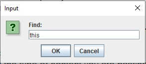

Find makes it very easy to find specific words in a document.
- Click the Edit and click the Find or use shortcut CTRL + F, then Find Dialog box will appear (Figure_20).
- Type the text you want to find in the text field.
The text will highlighted.

Figure_20
Clear
To remove all items use Clear.
- Click the Edit and click the Clear or use shortcut CTRL + D